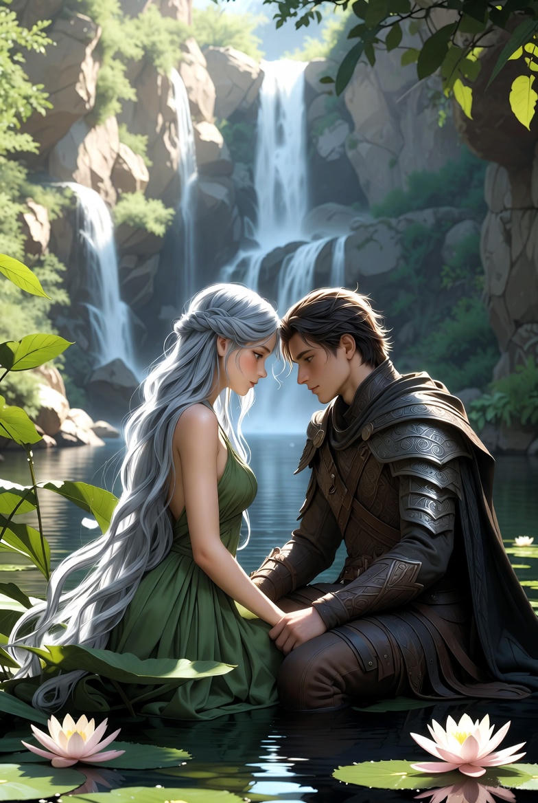
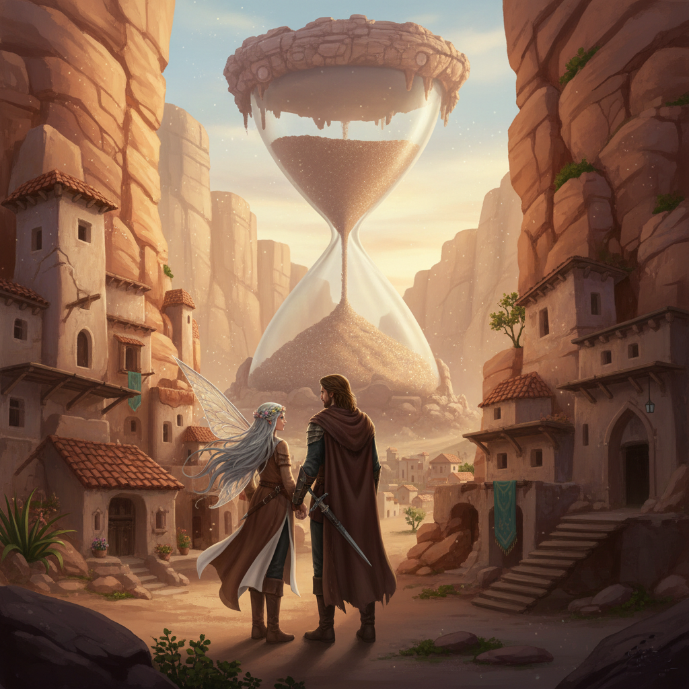
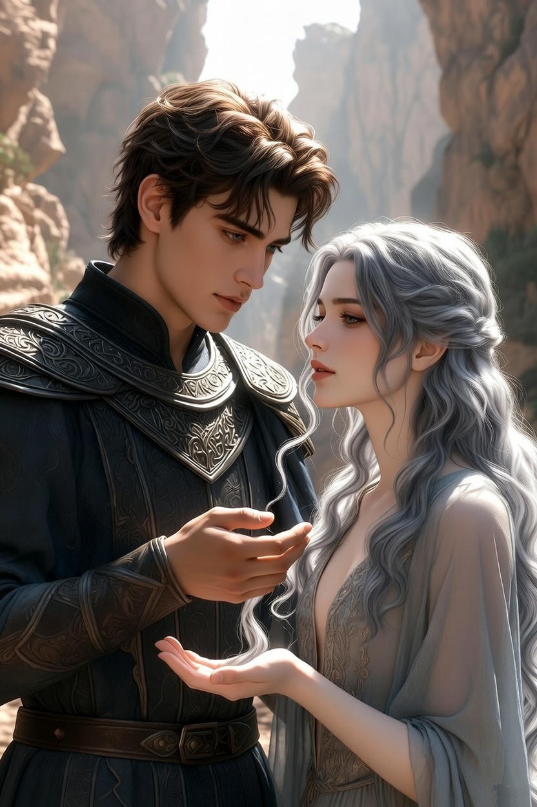
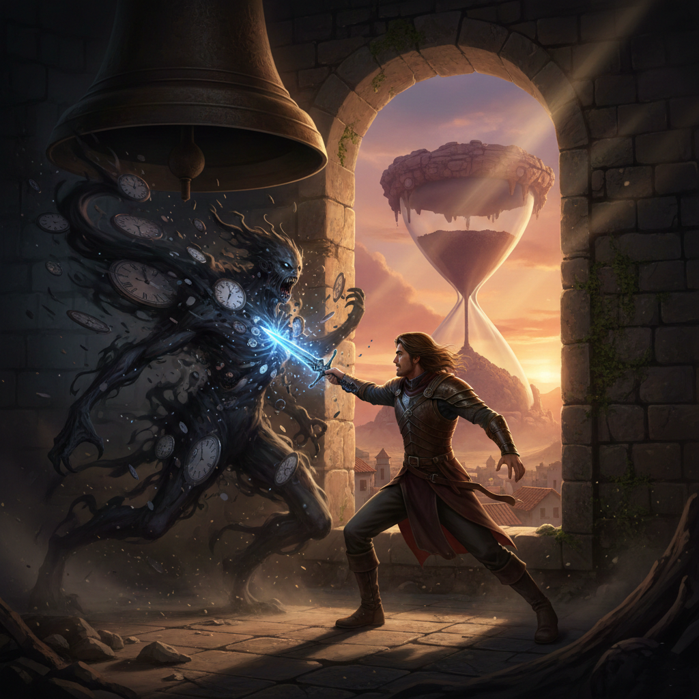
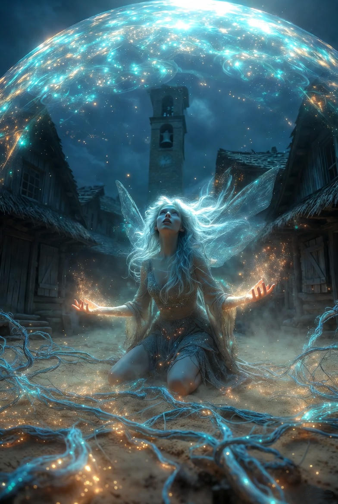
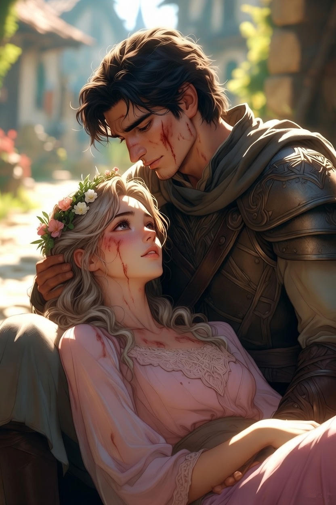
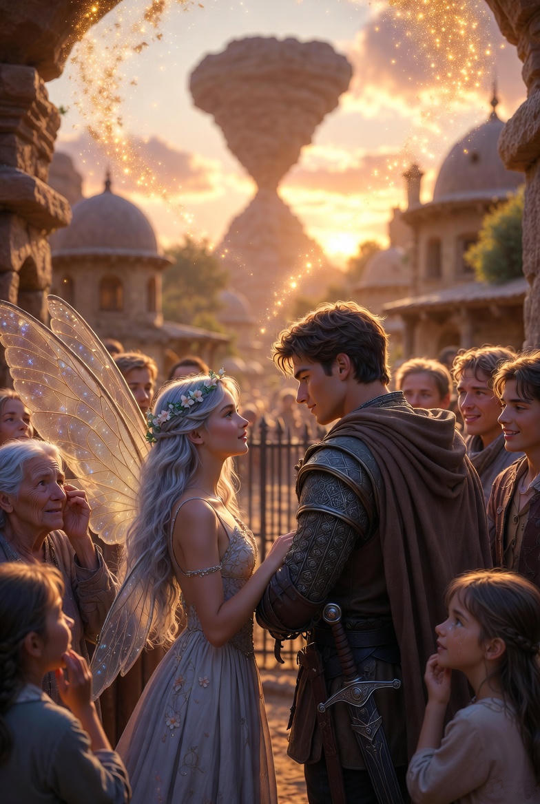
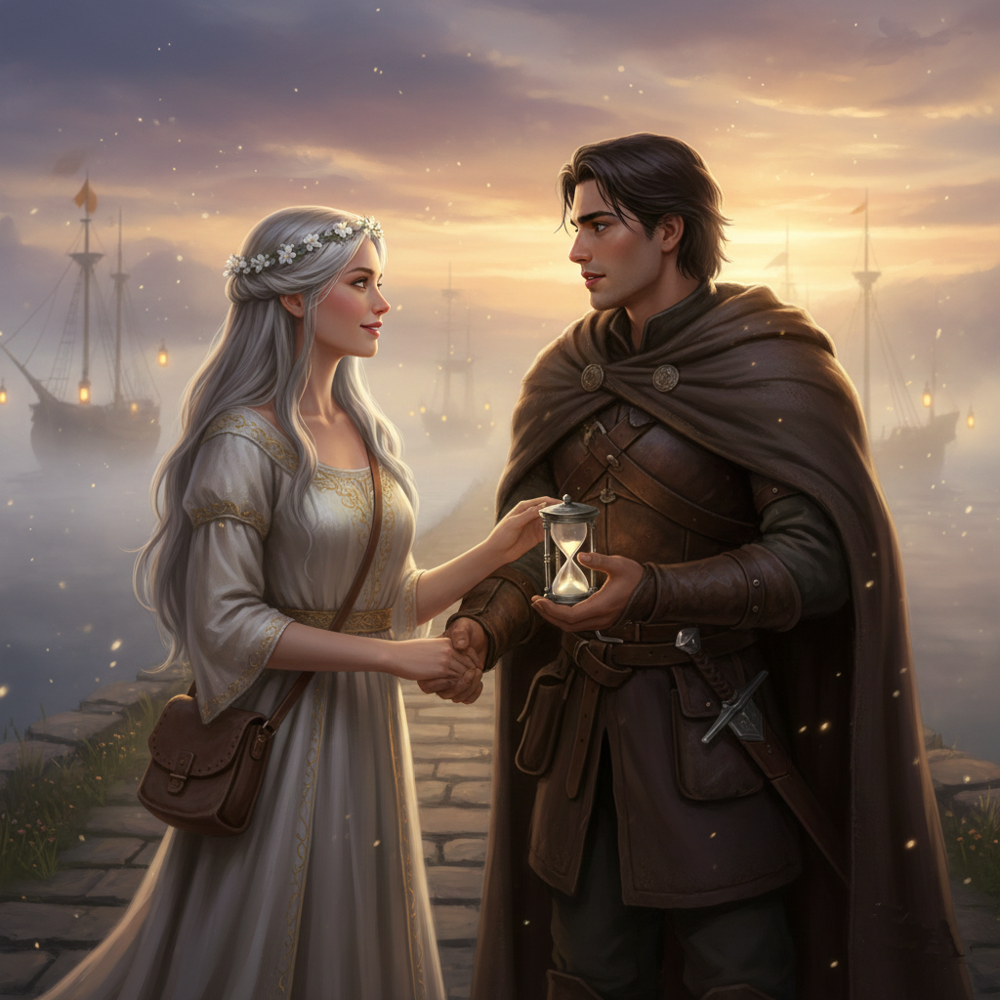

Ajánlom egy kedves barátomnak, aki keresi a pillanatban rejlő örökkévalóságot, és mer hinni a szív órájának szavában.
A Szivárvány-tó partján, ahol a tündérrózsák szirmai már nem csupán a vizet ölelték körül, hanem finoman beleolvadtak a levegőbe, mint álomszálak, Honóra és Alerion gyakran üldögéltek a naplementében. Az Időhurok-szigetükben a harmincadik nap örökké ismétlődött, de nem unalmasan, hanem minden alkalommal új árnyalattal: hol egy pillangó táncával telt el, hol egy halk madárénekkel, hol pedig csak a csenddel, amelyben a szívük ritmusa szólt egyedül.
Egyik ilyen alkonyon, amikor a tó vize aranyfényben fürdött, Alerion felnézett az égre. A csillagok már korán felragyogtak, mintha sietős üzenetet hoztak volna a Távoli Sziklák felől. – Honóra – mondta halkan, miközben ujjai összefonódtak a tündér kezével –, azóta, hogy megérintettük a Kristályt, álmaimban látok valamit. Egy tornyot, alacsonyabbnál, mint az Árnyékhegyek, ahol az idő nem repül, hanem megtörik, mint egy repedező tükör. És egy hang hív engem... téged is. Egy falu felé, ahol a percek megállnak félúton.
Honóra szemei felcsillantak, mint a tó mélyén rejtőző holdfény. Ő is érezte: a hurkok, amiket együtt szőttek, most meglazultak egy pillanatra, hogy beengedjenek egy új szálat. – Porig, az Állópercek Falva – suttogta. – Régi legendák suttogják a nevét. Ott az idő kissé megtörik, mint egy elfelejtett dal ritmusa. Egy torony áll a közepén, ahol az Időfaló lakik, aki mohón falja a pillanatokat, hogy magáénak tudhassa őket. De csak azok léphetnek be a falu határába, akik már megízlelték az Időtlen Pillanatot. Úgy tűnik, lovagom, most egy újabb ajtó nyílik – nem a csillagok tanodájába, hanem ebbe a megtört órába.
Alerion felállt, köpenye lágyan suhogva simult vállára, és a tőre markolata megcsillant a félhomályban. – Akkor induljunk. De vajon mi vár ránk ott lent, ahol a percek nem táncolnak, hanem botladoznak?
Honóra mosolygott, és egy finom mozdulattal megállította a szellőt körülöttük, hogy a pillanat még egy szívdobbanásig kiteljen. – Amit mi viszünk magunkkal: a hitet, hogy minden utazás egy új Hon-óra kezdete. És a te szívedben rejlő fényt, ami erősebb minden időfalónál.
Az út Porig felé nem szárnyakon vagy csillagösvényen vezetett, hanem egy ködös ösvényen keresztül, ahol a fák árnyai megnyúltak, mintha maguk is várnának valami elmaradt pillanatra. A levegő egyre sűrűbb lett, tele azzal a furcsa csenddel, amit csak az idő szakadása okoz: madarak énekeltek félbemaradt dallamokat, levelek hullottak lassan, mintha feledték volna, hogyan kell földre érni. Honóra kezét fogva Alerion érezte, hogyan kezd elhomályosulni a saját emléke: egy régi csata villanása megállt félúton, egy megfagyott nevetés...
Amikor a falu határához értek, Porig bontakozott ki előttük, mint egy félbehagyott festmény. Házak sorakoztak sorban, ablakai üresen bámultak, füst szállt a kéményekből, de mozdulatlanul, mintha a szél elfelejtette volna, hogyan kell fújni. Az emberek – vagy ami maradt belőlük – lassan jártak az utcákon, arcukon az az üres tekintet, amit az elvesztett percek hagynak maguk után. Egy öregasszony megállt előttük, kosara a kezében, tele almával, amit sosem szedett le igazán.
–Idegenek... – motyogta, szemei ködösen csillogtak. – Ti még mozogtok? Az Időfaló itt lakik, a toronyban. Mindenkit felfal, aki siet. De ha van szívetek, ami erősebb az óráknál... talán...
Honóra bólintott, és egy finom érintéssel felgyorsította az asszony lépteit, csak egy pillanatra, hogy újra érezze a mozgás örömét. – Köszönjük, anyóka. Mi a Szivárvány-tótól jövünk, ahol az idő táncol. Mutasson utat a toronyhoz.
A torony a falu szívében magasodott, nem fenyegetően, hanem szomorúan: kőfalai repedezettek voltak, tetején egy hatalmas óra mutatta a harmincadik percet, örökké mozdulatlanul. Alerion szíve hevesen vert, nem a félelemtől, hanem attól a mély, természetfeletti tűztől, amit Honóra felé érzett – egy olyan szerelem, ami nem a testé, hanem a lelkek örök fonódásáról szólt, ahol minden pillanatban az egész univerzumot látta a tündér szemében.
– Én megyek be – mondta Alerion határozottan, kezét Honóra arcára téve. – Te maradj itt, őrizd a falu idejét, amíg én szembenézek vele. De... hadd vigyelek magammal valamit tőled! Honóra egy ezüstös tincset vágott le a hajából, és a lovag markába csúsztatta. – Ezt. És a tudatot, hogy az irántad táplált érzések nem múló pillanat, hanem örök hurok. Használd, ha az időfaló közelít.
A torony belseje egy végtelen lépcsőház volt, ahol minden fok egy elakadt percet jelzett: itt egy gyermekkacagás visszhangzott félbeszakadva, ott egy szerelmes ölelés fagyott meg félúton. Alerion léptei visszhangzottak, de lassan, mintha a levegő ellenállt volna nekik. Minél magasabbra jutott, annál erősebben érezte az Időfaló jelenlétét – egy gomolygó árnyékot, ami nem ordított, hanem mohón nyeldekelte a levegőt, minden egyes lélegzetnél elszívva egy darabkát az életből.
Végül a tetején, az óra alatt, megjelent az Időfaló: nem szörnyeteg volt, hanem egy öreg, görnyedt alak, bőre pergamenszerű, szemei üres gödrök, szája pedig egy feneketlen szakadék, ami mindent magába húzott. Körülötte halottak percek lebegtek, mint porfelhők: elszalasztott alkalmak, megbánt szavak, félbehagyott álmok.
– Még egy vándor... – dünnyögte a faló, hangja recsegő, mint egy elakadó óra. – Gyere közelebb, lovag. Add ide a szívedet, a te perceid is finom falat lesznek. Miért sietsz? Itt minden megállhat... örökre.
Alerion tőre a kezében megremegett, de nem emelte fel. Ehelyett előhúzta Honóra hajtincsét, és szorosan markolta. Ekkor tört elő belőle az a földöntúli érzelem: nem harag, nem félelem, hanem egy tiszta, szenvedélyes szeretet, ami Honóra felé irányult, de most kiterjedt, mint egy fénygömb, ami betöltötte a tornyot. Látta maga előtt a tündér mosolyát, érezte a tóparti ölelést, hallotta a szívük közös ritmusát – és ez a szeretet nem volt földi, hanem olyan, ami az időn túl nyúlt, ahol a pillanatok nem múlnak, hanem szárnyalnak.
– Nem adom oda – mondta Alerion, hangja erősödött, miközben a fénygömb nőtt. – Mert a szeretetem nem perc, hanem örökkévalóság. Te falod az időt, mert félsz tőle. De én... én táncolok vele, mert Honóra megtanított rá.
Az Időfaló előre vetette magát, szája kitárult, hogy elnyelje a lovagot, de a fénygömb megérintette. Nem égette el, hanem átjárta: a faló teste megremegett, és hirtelen a saját emlékei ömlöttek vissza belé – egy régi szerelem, amit elnyelt a mohósága, egy falu, amit megfosztott a mozgástól. Sikoltva hátrált, de Alerion nem állt meg; lépésről lépésre közelített, a szeretet fényével fonva át az árnyékot.
– Lásd – suttogta Alerion –, ez a tűz nem pusztít, hanem gyógyít. Vedd vissza, amit elvettél. Engedd, hogy a percek újra folyjanak.
A faló teste felolvadt, mint köd a napfényben, és helyette egy apró, ezüst óra maradt vissza, ami halkan ketyegett – a falu ideje, ami visszaváltozott szabadságra. Alerion kimerülten roskadt le, de a tincset még mindig markolta, és tudta: ez a győzelem nem az ő ereje volt, hanem a kettőjük közti szent köteléké.
Közben lent, a falu főterén Honóra a földre borult. Mindkét kezét a poros talajra szorította. Kék fény áradt belőle, ami egy hatalmas kupolát vont a falu köré. Verejték futott le az arcán; minden erejével azon volt, hogy visszatartsa a falótól a falusiak életfonalait. Ha csak egy pillanatra is meginog, az Időfaló mindenkit kiszárított volna, hogy erőt nyerjen Alerion ellen.
A toronyból áradó fényrobbanás után a csend nem üres volt, hanem várakozással teli. Honóra ott feküdt a falu főterén, karjai kiterjesztve, mint aki az egész világot át akarja ölelni. A kék indák, amikkel a jelent a földhöz láncolta, lassan visszahúzódtak a bőre alá, halvány ezüstös hegeket hagyva a csuklóján – az önzetlenség örök jegyeit.
Alerion sietve lépett ki a torony kapuján, kezében az apró ezüst órával, ami most már halkan és megnyugtatóan ketyegett. Amint meglátta a porban fekvő tündért, a szíve a torkában dobogott. Odaérve gyengéden az ölébe emelte Honóra fejét.
– Itt vagyok – suttogta a lovag. – A torony szabad. Az idő újra a miénk.
Honóra lassan kinyitotta a szemét. A tekintete még ködös volt, de amint Alerion arcára fókuszált, egy fáradt, de boldog mosoly jelent meg az ajkán. – Éreztem a fényedet, Alerion. Megtartottál minket... a hajtincsem és a szíved volt a horgonyom, amikor a sötétség majdnem elragadott.
A falu lakói, mint az alvajárók, akikből hirtelen elszállt a bódulat, lassú körben gyűltek köréjük. Az öregasszony, akit korábban láttak, most remegő kézzel nyújtotta át a kopott tarisznyát. – Nem csak az időnket adtátok vissza – mondta az asszony, és a hangja már nem motyogott, hanem tiszta volt, mint a sivatagi szél. – Hanem a könnyeinket és a nevetésünket is. Ez a homok a tarisznyában Porig szívének pora. Ha nehéz döntés előtt álltok, vagy ha az út ködbe vész, ez a homok megmutatja az igazságot, mert ti megtanítottátok nekünk: a legnehezebb pillanat is kincs, ha van kiért megélni.
Honóra és Alerion még egy napot a faluban maradtak. Megvárták, amíg a nap valóban lebukik, és nem tér vissza három óra múlva. Megnézték, ahogy a gyerekek elalszanak, és tudták, hogy másnap reggel egy új, ismeretlen napra ébrednek majd.
Másnap hajnalban, amikor a homokóra alakú szikla hosszú árnyékot vetett a sivatagra, a két vándor készen állt az indulásra. Alerion övére akasztotta a kis ezüst órát, Honóra pedig a vállára vetette a bűvös homokkal teli tarisznyát.
A falu határában megálltak egy pillanatra, és visszanéztek. Porig már nem egy félbehagyott festmény volt, hanem egy lüktető, élő közösség. – Merre tovább, Idő Tündére? – kérdezte Alerion, miközben ujjai összefonódtak Honóráéval.
Honóra nem az eget nézte, hanem a lovag szemét. – Az út maga a válasz, Alerion. Az óra ketyeg, a homok vár, és valahol, a Ködös Kikötő irányában, egy újabb elfeledett pillanat várja, hogy fényt vigyünk bele.
Kézenfogva indultak el a végtelennek tűnő úton. Mögöttük a biztonságos múlt, előttük a kiszámíthatatlan, de gyönyörű jövő. A porban hagyott lábnyomaikat lassan belepte a szél, de a szívükben hordozott "Hon-óra" ragyogása bevilágította az előttük álló összes mérföldet.